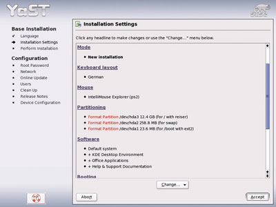
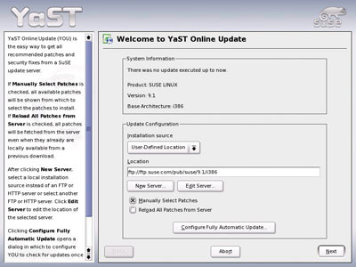
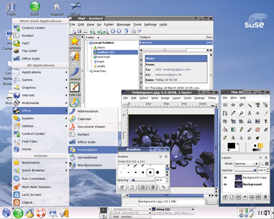

Обзор подготовлен по материалам сайта http://www.suse.de.
В прошлом году компания Novell (http://www.novell.com) объявила о том, что одним из приоритетных направлений ее бизнеса будет продвижение и поддержка решений Linux и Open Source. Подтверждением серьезности этих намерений стала покупка сначала фирмы Ximian, специализирующейся на ПО с открытым кодом, а затем - SuSE Linux, одного из лидеров среди поставщиков коммерческих дистрибутивов Linux. В нынешнем году Novell представила новую версию дистрибутива для настольных ПК - ОС SuSE Linux 9.1, первый вариант программного продукта после завершения всех процедур слияния. С технологической точки зрения главная особенность этой системы - использование ядра Linux 2.6, появившегося в конце 2003 г.
Для любителей и профессионалов
SuSE Linux 9.1 вышла в двух редакциях: Personal (Персональная) и Professional (Профессиональная). Первая предназначена в основном для пользователей Windows, которые впервые имеют дело с Linux. Она состоит из двух компакт-дисков: один из них, под названием LiveCD, позволяет загружать систему непосредственно с него, с помощью второго CD ОС можно установить на жесткий диск. Редакция Professional предназначена для более опытных пользователей и корпоративных заказчиков, комплектация ее значительно шире. Дистрибутив поставляется на пяти компакт-дисках и двух двусторонних дисках DVD, содержащих более 2500 различных программных пакетов с открытым кодом; в комплект также входят два печатных пособия - руководства пользователя и администратора. Один из дисков DVD содержит версии приложений для 32-разрядных систем, а на втором собраны пакеты, поддерживающие 64-разрядные расширения AMD и Intel.
В редакции Personal имеется все необходимое для стандартного домашнего применения: средства проигрывания компакт-дисков различных мультимедийных форматов; офисное ПО, представленное набором OpenOffice.org; настольная пользовательская среда KDE; средства редактирования фотографий и графики; Web-навигатор Konqueror со встроенными дополнениями от MacroMedia Flash и Java Runtime Environment.
Набор программных средств в составе SuSE 9.1 Pro намного шире: различное серверное ПО, инструменты разработки приложений, материалы Linux Standards Base, программы обработки текстов, базы данных и электронные таблицы от SoftMaker, а также множество дополнительных свободно распространяемых программ, подобных Evolution и Mozilla.
Что находится в коробках SuSE Linux 9.1Personal Edition (стоимость 70 долл.)
Professional Edition (стоимость 180 долл.)
Оба варианта системы можно также свободно скачать по FTP. |
Установка системы
Для установки системы SuSE Linux на ПК используется средство конфигурирования YaST (Yet another Setup Tool). Как работать с этой утилитой, в большинстве случаев достаточно понятно, но для новых пользователей в экспертном режиме установки возможны некоторые сложности. К сожалению, в YaST имеется ряд специфических ошибок, впрочем, не слишком критичных. Инсталляция фактически идентична для обеих редакций, хотя редакция Personal ограничена в опциях обновления и восстановления.
При загрузке после выбора языка инсталлятор автоматически сканирует компьютер и предоставляет пользователю список "предложений", включая инсталляционный режим, разбивку диска, выбор пакетов и т. д. (рис. 1). Здесь пользователь может столкнуться с одной из "причуд" YaST, связанной с не вполне корректным изменением разделов файловой системы NTFS в автоматическом режиме (этого можно избежать, используя опцию "Создать собственную разметку разделов").
|  |
| Рис. 1. YaST проводит пользователя через всю процедуру установки.
|
Есть и еще одна известная ошибка установки всех дистрибутивов Linux, использующих новое ядро 2.6, включая и SuSE Linux 9.1. Она проявляется в том, что уже имеющаяся на компьютере Windows XP иногда становится незагружаемой, хотя сама файловая система не портится. О простом способе решения проблемы можно прочитать по адресу http://portal.SuSE.com/sdb/en/2004/05/fhassel_ windows_not_booting91.html.
После установки со всех компакт-дисков YaST запрашивает конфигурирование множества основных параметров настройки: пароль администратора, установки сети или параметры настройки модемной связи, настройки дополнительного интерактивного обновления системы, добавления стандартного пользователя, настройки аппаратной конфигурации. Тут не возникает никаких проблем, но нужно иметь в виду еще две особенности инсталляции. Во-первых, SuSE использует по умолчанию DES-стандарт для шифрования паролей, который ограничивает длину имен пользователя и паролей восемью символами. Чтобы использовать MD5-кодирование, допускающее более длинные имена, нужно нажать кнопку "Expert" при вводе пароля администратора и изменить соответствующую установку. Во-вторых, SuSE включает варианты для задания сетевой идентификации через LDAP и NIS, но не дает пользователям опцию задания SMB (Windows) идентификации во время инсталляции. Изменить эту настройку можно уже после установки системы.
Настройка конфигурации
Задачи обнаружения и настройки в SuSE Linux 9.1 выполняются той же утилитой YaST, которая используется для инсталляции. Она может работать как в графическом, так и в текстовом режиме, что делает этот инструмент достаточно универсальным и особенно полезным для серверов, не имеющих установленной оконной среды X Window.
В состав YaST входит множество модулей с самыми разными функциями: от начальной установки программ до инструментальных средств управления сетевыми серверами и системными конфигурациями. Мы рассмотрим здесь наиболее интересные из них.
SaX2 (SuSE расширенная настройка X Window для SuSE, версия 2) - графическая утилита, которая запускается из настольной среды или из командной строки (в последнем случае она сама сначала запускает сервер X). Программа дает пользователям возможность конфигурировать основные видеопараметры, включая настройки графической платы и монитора, разрешающую способность и цветовую глубину, настройки клавиатуры и мыши, а также расширенные параметры настройки типа трехмерного ускорения, сенсорных экранов и т. п.
Интерактивный онлайновый модуль обновлений YOU (Yast Online Update) используется для получения и установки обновлений и драйверов, которые не входят в состав дистрибутива SuSE (рис. 2). Работа с ним начинается с того, что пользователь выбирает источник для инсталляции: либо с одного из предопределенных сайтов SuSE (ftp или http), либо с сервера Samba. YOU может также установить исправления с CD-ROM- или DVD-дисков. Как только источник инсталляции установлен, в YOU появляется возможность выбрать доступные пакеты и обновления. Выбрав обновления, пользователь нажимает кнопку "Accept", после чего выполняется загрузка и установка необходимых модулей. В дополнение к модулю обновления имеется апплет SuSE Watcher, который контролирует доступность обновлений для автоматической установки. Режим автоматических обновлений может быть сконфигурирован и внутри модуля YOU, позволяя автоматически загружать и устанавливать исправления с удаленных узлов.
|  |
| Рис. 2. YOU - интерактивный онлайновый модуль обновлений в составе YaST.
|
Модуль управления пакетами программ появился в YaST недавно. В принципе он неплохо справляется с возложенными на него задачами, хотя кажется немного сложным по сравнению с аналогичными решениями от конкурентов. SuSE следует рассмотреть возможность интегрировать инструмент типа Ximian Red Carpet, соответственно изменив его, чтобы можно было управлять локальными ресурсами так же, как архивами-репозиториями пакетов в Интернете.
Очень полезен, особенно для пользователей ноутбуков, такой модуль YaST, как средство управления профилями (Profile Management tool), которое позволяет создавать системные конфигурации и переключаться между ними "на лету". По сути он представляет собой лишь графическую оболочку для системы управления конфигурациями (SCPM).
Все разнообразие системных параметров настройки может быть включено в профиль и предварительно настроено в ресурсных группах (Resource Groups); сюда входит работа с сетями, с устройствами шины PCMCIA, а также конфигурация X Window. Профили можно переключать "на лету", с установкой опции сохранения любых измененных параметров настройки в текущем профиле перед переключением. К сожалению, профили, созданные SCPM, становятся бесполезны каждый раз, когда система модифицируется, и их приходится обновлять вручную.
YaST включает редактор sysconfig для коррекции файлов в каталоге /etc/sysconfig. Он отчасти похож на редактор системного реестра regedit в Windows. Утилита аккуратно сортирует различные файлы и параметры настройки по удобным категориям - например, "Приложения", "Аппаратные средства" и "Сеть". Это обеспечивает краткий обзор каждой области установки и списка возможных значений.
SuSE включает и множество дополнительных модулей для настроек серверных приложений и автоматизированного развертывания серверов. Инструмент автоматической установки, названный AutoYaST, хотелось бы отметить особо - он позволяет администраторам системы создавать инсталляционные сценарии, которые затем выполняют в локальной сети автоматические, уже настроенные инсталляции. Однако AutoYaST не совсем полно описан в документации, и нельзя сказать, чтобы он был интуитивно понятен при использовании, - нужно надеяться, что это будет учтено в следующей версии SuSE Linux.
SuSEplugger - графическая оболочка для подсистемы plug-and-play SuSE Linux 9.1; она обнаруживает и устанавливает новые аппаратные компоненты, подключаемые к системе, а также облегчает пользователям обращение к различным модулям настроек YaST для аппаратных средств, которые уже были идентифицированы (но не обязательно правильно настроены). Последняя функция реализована в стиле интерфейса Windows Device Manager. SuSEplugger реализует также функции автоматического старта программ при подключении нового оборудования.
Сама поддержка аппаратных средств реализована в SuSE Linux 9.1 на хорошем уровне, хотя и не вполне совершенна. Инструментарий YaST запускает подпрограммы обнаружения и подключает Linux-драйверы из дистрибутива.
В дополнение к обычным открытым исходным драйверам в систему включен полезный инструмент NdisWrapper, обеспечивающий Linux возможность использовать драйверы Windows для множества сетевых плат, которые в настоящее время вообще не имеют "родных" драйверов Linux (главным образом это сетевые радиоплаты WLAN).
Подводя итог обзору средств настройки конфигурации, наверное, стоит высказать упрек к SuSE по поводу нежелания включить в свой дистрибутив коммерческие драйверы и другие подобные средства (например, коммерческие библиотеки для 3D-ускорителей).
Приложения
В SuSE Linux 9.1 включен богатый набор приложений: в редакции Personal имеется более 500 пакетов, в Professional - свыше 3400.
Комплект приложений в редакции Personal хорошо сбалансирован, если не считать некоторых проблем с мультимедиа. Дистрибутив содержит современные версии традиционного набора настольных приложений: OpenOffice.org (офисный пакет), KDE Personal Information Manager (управление персональной информацией), Konqueror 3.2.1 (Web-браузер), Kopete (чат), Kaffeine 0.4.1 (мультимедиа-плеер), Gimp 2.0 (цифровое редактирование изображений), xsane и Kooka (работа со сканером), Digikam (обработка цифровых фотографий), K3B (запись CD- и DVD-дисков), kdetv (работа со встроенным TV-тюнером). Достаточно широк и выбор игр.
Основные технологии SuSE Linux 9.1Ядро Linux 2.6. Главные его новшества связаны с улучшенной поддержкой многопроцессорных систем. Если системы на базе ядра версии 2.4 работали максимум с восемью процессорами, то дистрибутивы Linux 2.6 поддерживают одновременно до 32 процессоров. Новое ядро совместимо как с обычными 32-разрядными, так и с новыми процессорами с 64-разрядными расширениями (Opteron и Athlon 64 компании AMD и 64-разрядный Intel Xeon с Intel Extended Memory 64 Technology). В новом ядре также усовершенствована подсистема управления запросами ввода-вывода и организация управления данными. KDE 3.2.1. Новая версия популярной графической настольной среды. Система стартует теперь быстрее, автоматически опознает и обслуживает внешние устройства (компакт-диск, цифровой видеодиск, флэш-память стандарта USB, фотокамера, Bluetooth). GNOME 2.4.2. Новая версия альтернативной настольной среды Gnome с улучшенными функциями, в том числе для пользователей с ограниченными возможностями (голосовой ввод-вывод, дисплей с шрифтом Брайля). В редакции Professional имеется полный настольный вариант, в Personal - набор соответствующих библиотек. SAMBA 3.02a. Оптимальная установка гетерогенных домашних сетей с Linux- и Windows-узлами. Обеспечивает интеграцию Linux-узлов в доменах Windows и подключение к активной директории с отдельной регистрацией, удаленные клиентские файлы могут теперь кэшироваться на стороне сервера. |
Редакция Professional включает также Gnome 2.4.2, средства мультимедиа, игры и разнообразные коммерческие приложения (рис. 3). В частности, SuSE включила в пакет свободные Linux-версии двух приложений от компании SoftMaker: текстовый процессор TextMaker и электронные таблицы PlanMaker - облегченные, но полнофункциональные альтернативы OpenOffice.org. Эти приложения также совместимы со своими эквивалентами из состава Microsoft Office.
|  |
| Рис. 3. Приложения в SuSE Linux 9.1 редакции Professional.
|
В редакцию Professional включена и свободно распространяемая версия SQL Anywhere Studio 9 (редакция для разработчика) от Sybase - пакета, предназначенного для проектировщиков баз данных, для быстрой разработки и развертывания приложений для малого и среднего бизнеса. Программа поставляется с собственным SQL Server, имеет расширенные возможности синхронизации базы данных и набор графических инструментальных средств разработки. SuSE также предложила широкий выбор инструментальных средств разработки для KDE и Gnome, впечатляющий диапазон серверных пакетов, включая такие популярные программы, как Apache, Samba, MySQL и т. д., вместе с разнообразными графическими конфигурационными средствами для наиболее распространенных серверных приложений.
Кроме коммерческих приложений, в редакцию Professional входит множество современных программ с открытым кодом: GnuCash (управлениe личными финансами), Scribus (настольная издательская система), Rekall (настольная СУБД), MrProject (управление проектами), Ximian's Evolution (электронная почта) и множество дополнительных игр.
В редакцию Professional включен также навигатор Epiphany, основанный на движке навигатора Mozilla (браузер по умолчанию для среды Gnome), и собственно браузер Mozilla.
Заключение
SuSE Linux 9.1 - современный дистрибутив, простой в установке, удобный в работе, поддерживающий широкий диапазон аппаратуры. Несмотря на мелкие проблемы, этот продукт вполне может претендовать на звание "Лучший Linux десктоп" и в высшей степени конкурентоспособен в сравнении с другими продуктами, в частности, с рассматриваемыми на DesktopOS.com: Lycoris Desktop/LX, Lindows Linspire и Xandros Desktop.
Редакция Personal дистрибутива SuSE Linux 9.1 особенно привлекательна низкой ценой и большими возможностями, но его не слишком хорошая расширяемость должна заставить потенциальных покупателей взвесить все "за" и "против". Редакция же Professional - это полновесный дистрибутив Linux, способный удовлетворить запросы привередливых клиентов. Новым пользователям понравятся интеграция приложений и руководства, а задав выбор пакетов по умолчанию во время установки, они получат операционную систему, аналогичную редакции Personal, с тем отличием, что позже они всегда смогут расширить свои горизонты.